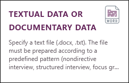

IMPORT textual data or documentary data
Sphinx iQ3 allows you to import textual documents of various types: directed or un-directed interviews, focus groups, articles or documents. You can create a new survey directly from one of these documents. To do so, you can:
-
From the home screen, click on Create a study.
-
Click on TEXTUAL DATA OR DOCUMENTARY DATA.

-
Select the collection method used or the nature of the imported document:
 NON DIRECTIVE INTERVIEW
NON DIRECTIVE INTERVIEW
The interview is in the form of a conversation.
The transcription is done by alternating pairs of question / response. We use the Q : or R : tags at the beginning of each question / response.
Several interviews can be transcribed afterward. We use the I : tag to identify the different interviews. The data characterizing the interview appears at the beginning of the transcription. They are defined by tags, for example : Name, Surname, Age, SPC, Date… These indications are written at the beginning. The sign ":" separates the tag from its content.
Annotations can be added to the transcript to mark nonverbal expressions or other comments that are not part of the transcribed text. These annotations are put between brackets and placed before the final punctuation mark to be annotated. For example: "If you insist [Resistance]".
EXAMPLE:
I : Interview with Jean Durand
Name : Jean
Age : 31
SPC : Employee
Date : 12/4/2013
Q : How are you ?
R : I’m good, thanks.
Q : But still ?
R : If you insist [Resistance]. I'll tell you it's great.
Q : Could you be more precise ?
R : I am talking about the people I meet. They are all very interesting. I like meeting new people [Interest]. It's always an opportunity to learn.
I : Interview with Anne Blanc
Name : Anne
Age : 50
SPC : Employee
Date : 25/6/2013
Q : Do you accept to respond?
R : Yes of course if it doesn’t take too much time.
Q : Tell me about what matters in your life.
R : I like eating. I don’t care about my shape. I love cooking and preparing my own meals.
Q : What kind of food do you prefer ?
R : All but especially when it is made from fresh products.
I : Interview with Jules Martin
Name : Jules
SPC : Employee
Age :
Date : 23/7/2013
Q : Do you accept to Respond ?
R : Yes, with great pleasure.
Q : Tell me about what matters in your life.
R : Walking and dreaming. I love escaping even if I’m staying here.
Q : You're a funny bird. What gives you wings?
R : You think I am a strange [Laughs]. But this is my way of being!
Q : What kind of dreams do you prefer?
R : Everything except nightmares.The corpus above transcribes 3 interviews, it has 10 pairs of questions and responses Q : and R : tags. The interviews are set by tags : Name, Age, SPC, Date. Annotations have been added : [Resistance], [Interest] and [laughs].
It leads to define variables relating to:
-
The identification of the interview : Name, Age, SPC, Date.
-
To the two types of texts to be analyzed: Questions, Responses.
-
To annotations.
It can be analyzed according to two types of statistical units leading to one of the data tables:
Interview: in column, 5 variables Name, Age, SPC, Date, Question, Response, Annotation. in line, 3 interviews, the text of all the questions and all the responses of each interview is grouped in fields Question and Response. All annotations of the same interview shown following in the Annotation field.
Example:
Pair of responses: in column, 5 variables Name, Age, SPC, Date, Questions, Responses, Annotation. in line, 10 pairs of question-Response. Question and Response fields contain only the text for each couple. The Annotation field contains only the annotations of the couple concerned. The identification of the interview is repeated for each pair Question, Response.
Example:
STRUCTURED OR SEMI-STRUCTURED INTERVIEW
The interview is directed (or semi-directive) when it is held using a guide or plan without corresponding to a questionnaire. The formulation of the questions and their order can vary depending on the speaker and his responses. The transcription is done by alternating pairs of question / response. We use the Q : or R : tags : At the beginning of each question or Response.
Several interviews can be transcribed afterward. We use the I : tag to identify the different interviews. The data characterizing the interview appears at the beginning of the transcription. They are defined by tags, for example : Name, Surname, Age, SPC, Date… These indications are written at the beginning. The sign ":" separates the tag from its content.
Annotations can be added to the transcript to mark nonverbal expressions or other comments that are not part of the transcribed text. These annotations are put between brackets and placed before the final punctuation mark to be annotated. For example: "If you insist [Resistance]".
The indication of the different themes or different parts of the interview is done by adding markers (milestone) ">" followed by a word. For example >introduction, >first part, >hobbies.
NOTE: There should be no space between the word and the character ">".
EXAMPLE:
I : Interview with Jean Durand
Name : Jean
Age : 31
SPC : Employee
>Introduction
Q : How are you ?
R : I’m good, thanks.
Q : But still ?
R : If you insist [Resistance]. I'll tell you it's great.
>Hobbies
Q : Could you be more precise ?
R : I am talking about the people I meet. They are all very interesting. I like meeting new people [Interest]. It's always an opportunity to learn.
I : Interview with Anne Blanc
Name : Anneµ
Age : 50
SPC : Employee
>Introduction
Q : Do you accept to Respond?
R : Yes of course if it doesn’t take too much time.
>Hobbies
Q : Tell me about what matters in your life.
R : I like eating. I don’t care about my shape. I love cooking and preparing my own meals.
Q : What kind of food do you prefer ?
R : All but especially when it is made from fresh products.In the corpus above 2 interviews are transcribed. It has 6 pairs of question & Response. Interviews are identified by tags : Name, Age, SPC, Date. Annotations have been added ([Resistance], [Interest]). The milestones : >Introduction and >Hobbies result in the creation of an additional field "milestone" indicating for each pair of question and response, the point to which it relates, or the topics for each interview (the number and nature of topics covered in each interview may vary).
Just like the non-directive interview, It leads to define variables relating to:
-
The identification of the interview : Name, Age, SPC, Date.
-
To the two types of texts to be analyzed: Questions, Responses.
-
To annotations.
-
To the interview parts and themes.
It can be analyzed according to two types of statistical units leading to one of the data tables:
Interview: in column, 6 variables Name, Age, SPC, Date, Question, Response, Annotation, Milestone. in line, 2 interviews, the text of all the questions and all the responses of each interview is grouped in fields Question and Response. All annotations of the same interview shown following in the Annotation field.
Example:
Pair of responses: contains the same columns as the previous base. in line 6 question-Response pairs. The "Question" and "Response" field contain only the text on each couple. The field "Annotation" only contains the annotations of the couple concerned. The "Milestone" field contains the point at which the Question & Response pair issue relates. The identification of the interview is repeated for each question-Response pair.
Example:
FOCUS GROUP
A focus group is a form of qualitative research in which a group of people are asked about their perceptions, opinions, beliefs, and attitudes towards a product, service, concept, advertisement, idea, or packaging. Questions are asked in an interactive group setting where participants are free to talk with other group members.
The transcription is done by selecting the name of each participant followed by ":" for each speech. A speech can be transcribed on multiple lines. At each change of speaker, it is mandatory to note the name (followed by ":") in a newline.
Annotations seized in brackets in the text (for example [Laugh]) allow you to add additional information on speaking turns.
The different parts of the discussion may be indicated by marks ">" and the name of the part.
NOTE: There should be no space between the character ">" and the title of the part.
EXAMPLE:
>Presentation
Animator : Today we will talk about yogurt, but before that could you introduce yourself by indicating your culinary preferences?Jeannette : I have a husband and two children and I'm on a diet. So for me shopping is torture. I want to please my family but also avoid temptations.
Nicole : I'm 50 and I live alone. I like to eat and cook.
Béatrice : I…,you know …
Animator : You are shy Beatrice, put yourself at ease, tell us what you like.
Béatrice : Chocolate and apples.
Monique : I'm 20 and do a lot of sport. I watch my diet.
>The yogurt in the diet
Animator : Let us now see the place of yogurt in your diet. Beatrice, will you start?
Béatrice : I am allergic to dairy products and I do not eat yogurt.
Jeannette : Thankfully my children love yogurt. Perfumed yoghurt [Taste]. For me I take 0%.
Nicole : I eat a little, and I do a lot of yoghurt dish. Prunes snails yoghurt are my specialty. This is particularly smooth.
Animator : Is there anyone who have original recipes like Nicole?
Béatrice : My mother taught me to make the tart flank. I now add apples and chocolate and I replace the flank with yoghurt beaten stiff.
Monique : You think ? Me, I bake the yogurt.
>The purchasing criteria
Animator : How do you choose your yoghurt and where do you buy it?
Nicole : I prefer glass jars, I get them for my jams [Packaging]. I make a lot of jam in order to perfume natural yoghurt that I buy at Carrefour.
Jeannette : I always take what is on discount, the packs of 12 lasts throughout the week [Saving]. I also like to try new products or organic thin waist.
Béatrice : I like the colors especially purple, so I buy the purple yogurt.
Animator : thank you all very much.In this focus group there are five interlocutors : An animator and 4 participants: Jeannette, Nicole, Beatrice and Monique. Marks indicate the different parts of the discussion and annotations ([Taste],[Conditioning],[Saving]) were added during transcription.
This corpus can be analyzed in two different ways:
The statistical unit is the speech. We construct a table containing 19 rows for each of the 19 interventions. In a column "speaker" field indicates who speaks and "text" field contains the text of the speech turn. A third field "Milestone" contains the part corresponding to speaking turn (only if milestones, identified by ">" have been added). A final field contains the annotations that could possibly be added to the speech turn.
Example:
The statistical unit is the speaker. We construct a table containing 5 rows (one per speaker). There are 4 columns containing the name of the speaker ("speaker" field), the regrouped text of turn of the speaker ("text" field), the parts of the interview in which the participant intervened ( field "Milestone") and finally grouped annotations ("annotations" field).
Example:
DOCUMENTS
Articles, reports ... many digitized documents are available on the web or in form of computer files.
They can be analyzed as undifferentiated text or by distinguishing elements that constitute documents: abstract, bibliography development titles ... For this, we have to copy documents by putting them end to end and indicating the name of each document, its characteristics and if any elements that compose supplemented by possible annotations.
Tags are used to define the document (Title, Author) and its components (Summary, Keywords, Body, References). A tag is separated from its content by the sign ":", for example : "Keywords : hunting, Dahu". The annotations in brackets allow you to qualify text fragments based on their status or their content. Thus we can isolate and qualify the fragments to quote.
NOTE: Each document must start with the same tag.
Article : The Dahu hunting
Author : Pierre and Paul
Summary : Once upon a time on alpine pastures.
Keywords : hunting, Dahu
Body :
Introduction [Title]
The Dahu is a weird animal. It feeds on herbs growing thick and fast on steep slopes.
It is also a perennial myth altitude.
The mountain setting [Title]
The geography [Subtitle]. Mountains, streams ravines are the Dahu’s home . Alps, Pyrenees, Carpate above 2000 meters. Often in the uninhabited areas.
The society [Subtitle]. The locals are robust montagnards but small. They live in caves, the richest have built chalets. For some years tourism has changed the sociology of the region which helps a lot with the proliferation of the species.
The animal [Title].
4 paws, 6 heads and unbalanced. Eat alfalfa and clover. The fur is dense enough: blond hair falling down to the paws. The strongest males are also so stupid, females are used as bait and dance on the snowy peaks.
References :
Jacques Steinli and Yvette Hornaire : Manners and alpine wildlife. Genevieve, Edition 1987
Antoine Dupond : Morphopsychologie and motor imbalances. Artus, Edition 2002
Article : Life of the angles
Author : Jeanne Biche
Summary : The appointment of geometry.
Keywords : round, square
Body :
The geometry [Title]
Geometric shapes have hard angles unlike informal curves of the gaseous natures. Their study goes back to the age of valuable curiosities recorded in abstruse jargon. Dead or alive, geometry is to take or leave. It is imposed to the collector surveyor. Whether it is a contemplative or measurer it reveals the degrees.
Non-geometric shapes have soft and wispy angles.
The triangle [Title]
Gold or Bermuda as a first approximation, tripod or jobber, the triangle converges significantly without blind spot. Freemason and Holy Trinity it declines in star more frequently than in stole. The school gives him its magnificence by removing his mystery.
The square [Title]
A circle with corners, as the square appears to us in majesty. Triangle of 4 sides derives from the circle as the man descend from monkeys.
The Hermes scarf is a notable exception unlikely a challenge to the geometry.
References :
Serge Cosinus : Poetry of the angles. Dufil, Edition 2005
Antoine Dupond : Return to reason. Paradigm, Edition 2001This corpus is formed by two articles consisting of 4 text fields: Summary, Keywords, Body & Reference.
Article and Author tags define the fields (variables) that give the characteristics of the reviewed documents. Summary, Keywords, Body, Reference tags define the text fields containing the text of each article. The annotations [Title] and [Subtitle] qualify the status or fragments content that contain them.
This corpus can be analyzed in two different ways:
The statistical unit is the document. We build a table containing two rows for each of the 2 studied articles. In column 7 fields (variables): "Article" and "Author" define the studied texts, "Summary", "Keywords", "Body", "References" gives the corresponding content for each article, Annotation includes annotations present in each article.
Example:
The statistical unit is the Body sentence of the field "Body". The body text of each article is cut in sentence. The resulting table then contains as many lines as there are phrases in the body of the articles. The columns are unchanged.
Example:
-
-
Select the tags, milestones and annotations to use.
-
Click on Next.
-
Select the document to import.
-
Click on Next.
-
Select the base you choose to use:
-
Answer pair or Interview for the guided and unguided interviews.
-
Speaking or Speaker for the focus group.
-
Body Sentence or Document for documents.
For more information on the base to be used, please see the corresponding section in step 3.
-
-
Select the language of the study.
-
Click on Finish.